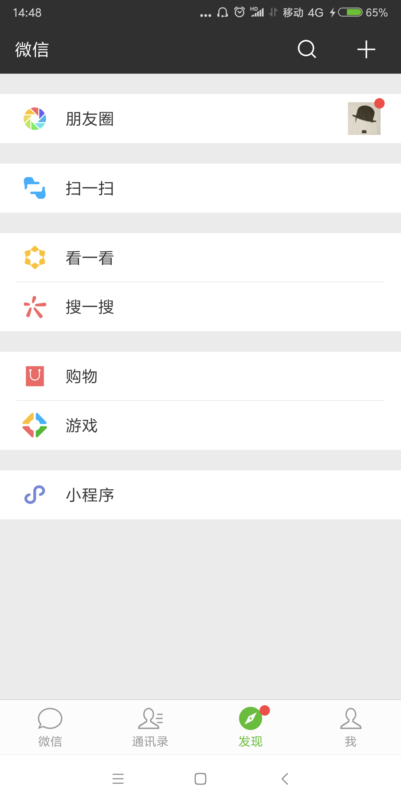

- 00 开篇词 照着做，你也能成为架构师！.md
- 01 架构到底是指什么？.md
- 02 架构设计的历史背景.md
- 03 架构设计的目的.md
- 04 复杂度来源：高性能.md
- 05 复杂度来源：高可用.md
- 06 复杂度来源：可扩展性.md
- 07 复杂度来源：低成本、安全、规模.md
- 08 架构设计三原则.md
- 09 架构设计原则案例.md
- 10 架构设计流程：识别复杂度.md
- 11 架构设计流程：设计备选方案.md
- 12 架构设计流程：评估和选择备选方案.md
- 13 架构设计流程：详细方案设计.md
- 14 高性能数据库集群：读写分离.md
- 15 高性能数据库集群：分库分表.md
- 16 高性能NoSQL.md
- 17 高性能缓存架构.md
- 18 单服务器高性能模式：PPC与TPC.md
- 19 单服务器高性能模式：Reactor与Proactor.md
- 20 高性能负载均衡：分类及架构.md
- 21 高性能负载均衡：算法.md
- 22 想成为架构师，你必须知道CAP理论.md
- 23 想成为架构师，你必须掌握的CAP细节.md
- 24 FMEA方法，排除架构可用性隐患的利器.md
- 25 高可用存储架构：双机架构.md
- 26 高可用存储架构：集群和分区.md
- 27 如何设计计算高可用架构？.md
- 28 业务高可用的保障：异地多活架构.md
- 29 异地多活设计4大技巧.md
- 30 异地多活设计4步走.md
- 31 如何应对接口级的故障？.md
- 32 可扩展架构的基本思想和模式.md
- 33 传统的可扩展架构模式：分层架构和SOA.md
- 34 深入理解微服务架构：银弹 or 焦油坑？.md
- 35 微服务架构最佳实践 - 方法篇.md
- 36 微服务架构最佳实践 - 基础设施篇.md
- 37 微内核架构详解.md
- 38 架构师应该如何判断技术演进的方向？.md
- 39 互联网技术演进的模式.md
- 40 互联网架构模板：存储层技术.md
- 41 互联网架构模板：开发层和服务层技术.md
- 42 互联网架构模板：网络层技术.md
- 43 互联网架构模板：用户层和业务层技术.md
- 44 互联网架构模板：平台技术.md
- 45 架构重构内功心法第一式：有的放矢.md
- 46 架构重构内功心法第二式：合纵连横.md
- 47 架构重构内功心法第三式：运筹帷幄.md
- 48 再谈开源项目：如何选择、使用以及二次开发？.md
- 49 谈谈App架构的演进.md
- 50 架构实战：架构设计文档模板.md
- 51 如何画出优秀的软件系统架构图？.md
- 加餐｜业务架构实战营开营了.md
- 加餐｜单服务器高性能模式性能对比.md
- 加餐｜扒一扒中台皇帝的外衣.md
- 如何高效地学习开源项目 华仔，放学别走！ 第3期.md
- 新书首发 《从零开始学架构》.md
- 架构专栏特别放送 华仔，放学别走！ 第2期.md
- 架构专栏特别放送 华仔，放学别走！第1期.md
- 架构师必读书单 华仔，放学别走！ 第5期.md
- 架构师成长之路 华仔，放学别走！ 第4期.md
- 结束语 坚持，成就你的技术梦想.md
49 谈谈App架构的演进
专栏截止到上一期，架构设计相关的理念、技术、实践已经基本讲完，相信你一路学习过来会有一种感觉，这些内容主要都是讲后端系统的架构设计，例如存储高可用、微服务、异地多活等，都是后端系统才会涉及。事实上确实也是如此，通常情况下我们讲架构设计，主要聚焦在后端系统，但这并不意味着App、前端就没有架构设计了，专栏所讲述的整套架构设计理念，虽然是来源于我的后端设计经验，但一旦形成完善的技术理论后，同样适应于App和前端。
首先，先来复习一下我的专栏所讲述的架构设计理念，可以提炼为下面几个关键点：
- 架构是系统的顶层结构。
- 架构设计的主要目的是为了解决软件系统复杂度带来的问题。
- 架构设计需要遵循三个主要原则：合适原则、简单原则、演化原则。
- 架构设计首先要掌握业界已经成熟的各种架构模式，然后再进行优化、调整、创新。
复习完我们就可以进入今天的正题，我来谈谈App架构的演进，以及上面这些架构设计关键点是如何体现的。
Web App
最早的App有很多采用这种架构，大多数尝试性的业务，一开始也是这样的架构。Web App架构又叫包壳架构，简单来说就是在Web的业务上包装一个App的壳，业务逻辑完全还是Web实现，App壳完成安装的功能，让用户看起来像是在使用App，实际上和用浏览器访问PC网站没有太大差别。
为何早期的App或者尝试新的业务采用这种架构比较多呢？简单来说，就是当时业务面临的复杂度决定的。我们以早期的App为例，大约在2010年前后，移动互联网虽然发展很迅速，但受限于用户的设备、移动网络的速度等约束，PC互联网还是主流，移动互联网还是一个新鲜事物，未来的发展前景和发展趋势，其实当年大家也不一定能完全看得清楚。例如淘宝也是在2013年才开始决定“All in 无线”的，在这样的业务背景下，当时的业务重心还是在PC互联网上，移动互联网更多是尝试性的。既然是尝试，那就要求快速和低成本，虽然当时的Android和iOS已经都有了开发App的功能，但原生的开发成本太高，因此自然而然，Web App这种包壳架构就被大家作为首选尝试架构了，其主要解决“快速开发”和“低成本”两个复杂度问题，架构设计遵循“合适原则”和“简单原则”。
原生App
Web App虽然解决了“快速开发”和“低成本”两个复杂度问题，但随着业务的发展，Web App的劣势逐渐成为了主要的复杂度问题，主要体现在：
- 移动设备的发展速度远远超过Web技术的发展速度，因此Web App的体验相比原生App的体验，差距越来越明显。
- 移动互联网飞速发展，趋势越来越明显，App承载的业务逻辑也越来越复杂，进一步加剧了Web App的体验问题。
- 移动设备在用户体验方面有很多优化和改进，而Web App无法利用这些技术优势，只有原生App才能够利用这些技术优势。
因此，随着业务发展和技术演进，移动开发的复杂度从“快速开发”和“低成本”转向了“用户体验”，而要保证用户体验，采用原生App的架构是最合适的，这里的架构设计遵循“演化原则”。
原生App解决了用户体验问题，没记错的话大约在2013年前后开始快速发展，那个时候的Android工程师和iOS工程师就像现在的人工智能工程师一样非常抢手，很多同学也是那时候从后端转行到App开发的。
Hybrid App
原生App很好的解决了用户体验问题，但业务和技术也在发展，移动互联网此时已经成为明确的大趋势，团队需要考虑的不是要不要转移动互联网的问题，而是要考虑如何在移动互联网更具竞争力的问题，因此各种基于移动互联网特点的功能和体验方式不断被创造出来，大家拼的竞争方式就是看谁更快抓住用户需求和痛点。因此，移动开发的复杂度又回到了“快速开发”，这时就发现了原生App开发的痛点：由于Android、iOS、Windows Phone（你没看错，当年确实是这三个主流平台）的原生开发完全不能兼容，同样的功能需要三个平台重复开发，每个平台还有一些差异，因此自然快不起来。
为了解决“快速开发”的复杂度问题，大家自然又想到了Web的方式，但Web的体验还是远远不如原生，怎么解决这个问题呢？其实没有办法完美解决，但可以根据不同的业务要求选取不同的方案，例如对体验要求高的业务采用原生App实现，对体验要求不高的可以采用Web的方式实现，这就是Hybrid App架构的核心设计思想，主要遵循架构设计的“合适原则”。
组件化 & 容器化
Hybrid App能够较好的平衡“用户体验”和“快速开发”两个复杂度问题（注意是“平衡”，不是“同时解决”），但对于一些超级App来说，随着业务规模越来越大、业务越来越复杂，虽然在用户看来可能是一个App，但事实上承载了几十上百个业务。
以手机淘宝为例，阿里确认“All in无线”战略后，手机淘宝定位为阿里集团移动端的“航空母舰”，上面承载了非常多的子业务，下图是淘宝的首页第一屏，相关的子业务初步估计就有10个以上。
再以微信为例，作为腾讯在移动互联网的“航空母舰”，其业务也是非常的多，如下图，“发现”tab页就有7个子业务。

这么多业务集中在一个App上，每个业务又在不断地扩展，后续又可能会扩展新的业务，并且每个业务就是一个独立的团队负责开发，因此整个App的可扩展性引入了新的复杂度问题。
我在[专栏第32期]提到，可扩展的基本思想就是“拆”，但是这个思想应用到App和后端系统时，具体的做法就明显不同了。简单来说，App和后端系统存在一个本质的区别，App是面向用户的，后端系统是不面向用户的，因此App再怎么拆，对用户还是只能呈现同一个App，不可能将一个App拆分为几十个独立App；而后端系统就不一样了，采用微服务架构后，后端系统可以拆分为几百上千个子服务都没有问题。同时，App的业务再怎么拆分，技术栈是一样的，不然没法集成在一个App里面；而后端就不同了，不同的微服务可以用不同的技术栈开发。
在这种业务背景下，组件化和容器化架构应运而生，其基本思想都是将超级App拆分为众多组件，这些组件遵循预先制定好的规范，独立开发、独立测试、独立上线。如果某个组件依赖其他组件，组件之间通过消息系统进行通信，通过这种方式来实现组件隔离，从而避免各个团队之间的互相依赖和影响，以提升团队开发效率和整个系统的可扩展性。组件化和容器化的架构出现遵循架构设计的“演化原则”，只有当业务复杂度发展到一定规模后才适应，因此我们会看到大厂应用这个架构的比较多，而中小公司的App，业务没那么复杂，其实并不一定需要采用组件化和容器化架构。
对于组件化和容器化并没有非常严格的定义，我理解两者在规范、拆分、团队协作方面都是一样的，区别在于发布方式，组件化采用的是静态发布，即所有的组件各自独自开发测试，然后跟随App的某个版本统一上线；容器化采用的是动态发布，即容器可以动态加载组件，组件准备好了直接发布，容器会动态更新组件，无需等待某个版本才能上线。
关于手机淘宝App更详细的架构演进可以参考《Atlas：手淘Native容器化框架和思考》，微信App的架构演进可以参考《微信Android客户端架构演进之路》。
跨平台App
前面我介绍的各种App架构，除了Web App外，其他都面临着同一个问题：跨平台需要重复开发。同一个功能和业务，Android开发一遍，iOS也要开发一遍，这里其实存在人力投入的问题，违背了架构设计中的“简单原则”。站在企业的角度来讲，当然希望能够减少人力投入成本（虽然我站在程序员的角度来讲是不希望程序员被减少的），因此最近几年各种跨平台方案不断涌现，比较知名的有Facebook的React Native、阿里的Weex、Google的Flutter。虽然也有很多公司在尝试使用，但目前这几个方案都不算很成熟，且在用户体验方面与原生App还是有一定差距，例如Airbnb就宣布放弃使用 React Native，回归使用原生技术（https://www.oschina.net/news/97276/airbnb-sunsetting-react-native）。
前端的情况也是类似的，有兴趣的同学可以看看玉伯的文章《Web研发模式演变》，专栏里我就不在赘述了。
小结
今天我为你讲了App架构演进背后的原因和架构分析，希望对你有所帮助。
这就是今天的全部内容，留一道思考题给你吧，你认为App架构接下来会如何演进？谈谈你的思考和分析。
© 2019 - 2023 Liangliang Lee. Powered by gin and hexo-theme-book.